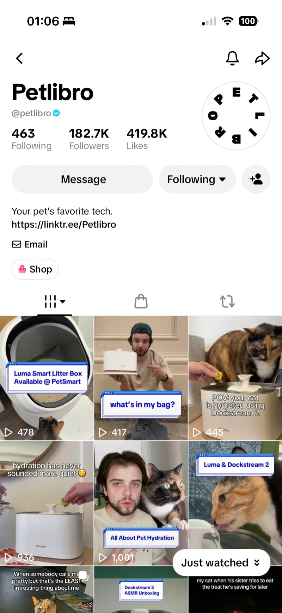

一
TikTok 创作者合作与挂车转化
Skillset
背景 S
宠物智能硬件品牌需要通过创作者内容获得海外用户和订单。
目标 T
开发优质创作者，推进从内容共创到TikTok Shop交易的完整链路。
行动 A
通过卖家平台及第三方工具开发60+创作者；标准化Brief，明确前3秒Hook、卖点、挂车时机与CTA，持续跟进发布及复盘。
成果 R
单次营销活动实现700万+曝光、300+笔直接转化、$30K+ TikTok Shop新增GMV。
700万+
项目累计曝光
300+
直接销售
3万+
美元新增 GMV

二
达人数据库与周度效果复盘
Skillset
背景 S
历史达人合作记录分散，团队缺少一致的渠道评估依据。
目标 T
建立统一数据库和监测机制，支持合作价值判断与复投决策。
行动 A
基于团队历史KOL记录，用Excel高级函数和透视表整理500+创作者；结合内容质量、履约、互动及转化评估合作价值，追踪ROAS、加购率和转化率。
成果 R
形成500+创作者数据库与周度效果看板，为Brief、佣金策略及复投优先级提供数据依据。